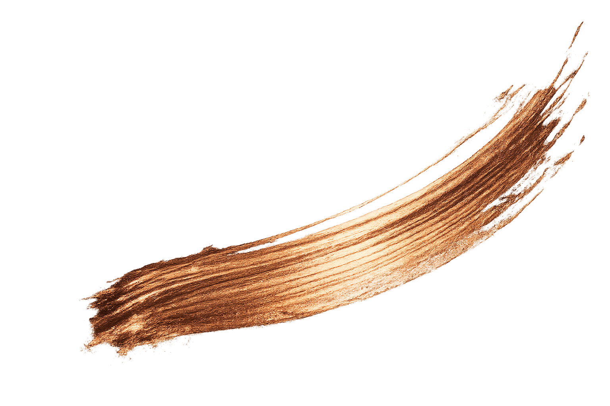
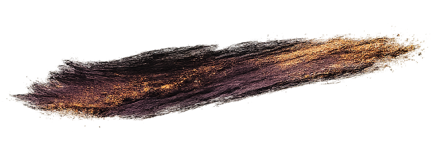

Good to know
Frequently Asked Questions
Every project is a little different, but here are some of the most common questions about timelines, payments, revisions, domains, and the website process.

Good to know
Every project is a little different, but here are some of the most common questions about timelines, payments, revisions, domains, and the website process.

The details
A few practical answers before we chat, so you can get a feel for how the process works.
Depending on the service you are interested in, turnaround times are typically between 1–3 weeks for logos, copywriting, and simple static websites of up to 5 pages. Projects beyond this scope will be discussed in more detail so I can better understand your vision, requirements, and goals.
A quote will be provided before work commences. A 50% deposit is required to secure your project, with final payment due prior to delivery of logo files or website launch.
Absolutely. I naturally write in a warm, approachable, and conversational style, though tone and professionalism can be tailored to suit your business and audience. During our initial chat, we’ll discuss the overall feel, voice, and direction you’d like your brand to have.
If you already have branding or a logo you are happy with, please provide the highest quality version available so it can be incorporated into your website. Additional fees may apply if logo recreation or extensive content rewriting is required.
Yes. I can guide you through purchasing your own domain and setting up the basics needed to get your website online. Where possible, I prefer clients to own and manage their own domain accounts directly, so everything stays securely in your name.
Absolutely. All websites are designed to function smoothly across desktop, tablet, and mobile devices.
Copperline Creative is based in Coffs Harbour, NSW. I work with local businesses as well as clients further afield, but I especially love helping small businesses in our local area show up beautifully online.
Once your website is live, your project is considered complete — however, support doesn’t disappear entirely. If you encounter any broken links or unexpected issues shortly after launch, please get in touch and I’ll be happy to assist. Future updates such as wording changes, image swaps, additional sections, or service updates can also be arranged.
Of course. Ongoing updates and additional work are available at a flat rate of $60 per hour.
Still have questions?
I’d love to hear more about your business and what you’re hoping to create.
Let’s chat